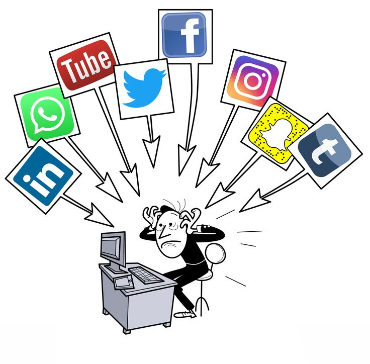

The relationship is one of a "cognitive operating system" interacting with a digital tool.
Medium vs. Methodology
Technology provides the medium, while media literacy provides the methodology for using that medium safely and effectively.

"To be technologically proficient without being media literate is to be a driver who knows how to press the gas pedal but doesn't know the rules of the road."
Intellectual Responsibility
Media literacy acts as the bridge that connects our technical abilities to our intellectual responsibilities. It ensures that as we adopt new gadgets, we remain in control of the digital environments we inhabit through critical thinking and ethical communication.